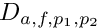
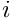
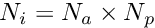
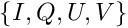
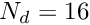
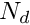

Table of Contents
Calibration is the process by which the temporal variations in the instrumental and/or ionospheric response to an incoming signal are characterised, in order to account for them when processing observational data. A calibration solution is a mathematical operation that can be applied either to measured visibilities or raw voltages to correct for these variations, and recover the visibilities (or raw voltages) that would have been measured under ideal conditions.
For the MWA, calibration solutions are modelled as a tile-dependent, linear transformation of two orthogonal polarisations. Thus, the full calibration solution for each tile is represented by a Jones matrix, , which is multiplied to the incident electric field, , to predict the measured voltages,  .
.
![\[ {\bf v} = {\bf J}{\bf e}. \]](form_33.png)
The form of depends on the coordinate bases used for and . For example,

In practise, of course, the inverse operations are used to reconstruct the electric field from the measured voltages:

Following Sokolowski et al., 2017, is calculated as the matrix product of two different matrices,

where
- represents the (direction independent) instrumental gains, and
 represents the (direction dependent) tile beam response. is obtained either from the Real Time System, or Hyperdrive. is obtained from Hyperbeam.
represents the (direction dependent) tile beam response. is obtained either from the Real Time System, or Hyperdrive. is obtained from Hyperbeam.
Real Time System (RTS)
The RTS is one of the pieces of software that can be used to generate calibration solutions for a VCS observation. The solutions are given in two sets of files, called "DI_JonesMatrices_nodeCCC.dat" (hereafter, DIJones) and `‘BandpassCalibration_nodeCCC.dat’' (hereafter, Bandpass), where CCC represents a coarse channel index. The DIJones files contain both the Jones matrices for each tile for the given coarse channel, , as well as the beam response matrix that was used by the RTS during calibration, . To get the calibration solutions for the fine channels, one must multiply on the right by the matrices in the Bandpass files, .
The bases of these matrices are as follows:

If you want to apply these calibration solutions to the same observation, then you can set
![\[ {\bf J} = {\bf J}_d \]](form_41.png)
for coarse channel approximations, or, for the fine channel solutions,
If the calibration solution is to be applied to a different observation (in a different part of the sky), or even to a separate different direction in the same observation, then the instrumental gains must be reconstructed by factoring out the beam response:
The resulting instrumental gains matrix is in the basis
Hyperdrive
Hyperdrive outputs the instrumental gains matrices (per tile per fine channel) in the "Offringa" format, described in Offringa format. The matrices are in the basis:
Hyperbeam
The primary beam is obtained using Hyperbeam, which is based on the FEE beam model described in Sokolowski et al., 2017. This gives the matrix in the basis
To obtain the beam matrix that converts from the basis to the basis, one must multiply on the right by the parallactic angle correction matrix: